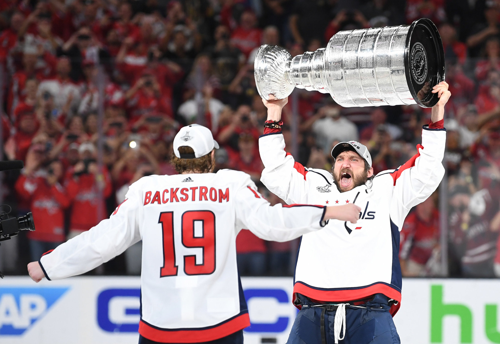

History
The Washington Capitals joined the NHL in 1974, along with the Kansas City Scouts, now the New Jersey Devils, as part of NHL expansion.
Their first season didn't go as planned. They finished in last place with a record of 8-67-5. The team was so bad throughout its first seven seasons, there was serious thought of relocating it out of the nation's capital. Then the Capitals brought in David Poile as general manager and made two huge moves that would wind up saving the team.
In his first action as new GM, Poile made one of the biggest trades in franchise history. He sent Ryan Walter and Rick Green to the Montreal Canadiens for Rod Langway, Brian Engblom, Doug Jarvis and Craig Laughlin. Also in 1982, the team drafted defenseman Scott Stevens. These moves resulted in a 29-point jump, a third-place finish in the Patrick Division and a playoff appearance. The Caps lost to the three-time defending champions, the New York Islanders, three games to one, but with the success of the 1982-83 season, talks about relocation were shut down.
| Franchise Record | Leader | Total |
|---|---|---|
| Games Played | Calle Johansson | 983 |
| Goals | Peter Bondra | 472 |
| Assists | Michal Pivonka | 418 |
| Points | Peter Bondra | 825 |
| Penalty Minutes | Dale Hunter | 2003 |
After that dramatic turnaround, the Caps made the playoffs the next 14 straight seasons. Their regular-season success didn't translate into the postseason, however, as they were eliminated in either the first or second round in eight straight seasons.
After the playoff streak ended in 1997, the Caps reached the Stanley Cup Final for the first time in franchise history the following season. They beat the Boston Bruins, Ottawa Senators and Buffalo Sabres to match up against the defending champs, the Detroit Red Wings, but they were swept in four straight.
The next few seasons were disappointing for Caps fans. Big-name veterans were brought in, in hopes of getting the team over the hump. Jaromir Jagr was brought in from the Penguins in a trade that sent prospects to Pittsburgh. They added free-agent forward Robert Lang, who was a linemate of Jagr's in Pittsburgh. The big-name additions didn't result in success, as the team eventually unloaded their veteran players in the summer of 2004 in an effort to rebuild the team.
That summer, the Caps drafted Alexander Ovechkin with the No. 1 pick, and the rebuilding process began. Success didn't come early during the rebuilding stages, but with Ovechkin leading the way, the Capitals have won three straight Southeast Division titles and are going to be around for a long time. With players such as Alexander Semin and Nicklas Backstrom complementing Ovi, the team is poised to be a contender in the Eastern Conference each season. Facebook Share Twitter Share